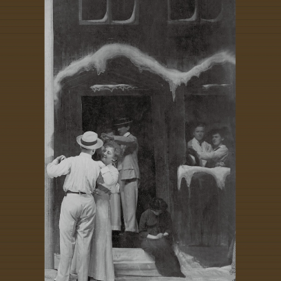
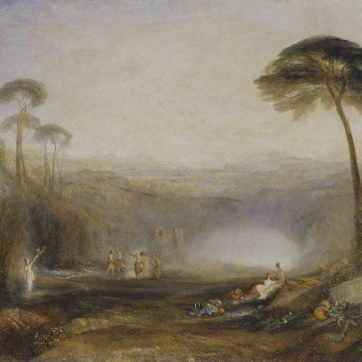

1945년(을유년)
을유문화사는 광복의 감격과 의의를 기리며
‘출판은 곧 건국 사업’이라는 사명감으로 첫발을 내딛었다

을유의
소식
을유문화사의
새로운 소식을 만나보세요.
-

아우구스트 스트린드베리, 『꿈의 연극』
입센은 조용히 그의 「인형의 집」에서 쉴 수 있지만 스트린드베리는 천국과 지옥을 상대로 치열한 싸움을 하고 있다.
-
찰스 밍거스, 『소리와 분노』
제2차 세계대전 이후 르네상스 시대에 인종주의에 대한 노골적인 반감을 드러내며 살았던 한 인간의 내면이 생생하게 펼쳐진다.
-
아르투어 쇼펜하우어, 『쇼펜하우어의 행복론과 인생론』
쇼펜하우어 철학이 마침내 19세기 중반부터 유럽을 석권하게 되었고, 니체와 프로이트, 채플린에게까지 큰 영향을 주었다.
-

제임스 조지 프레이저, 『황금가지 제1권 | 제2권』
고대인의 삶은 단순하다는 일반적인 통념을 뿌리치고, 원시 인류가 복잡한 마술과 금기, 미신과 얽혀 있음을 보여 준다.
-
토머스 모어, 『유토피아』
어느 지역에 물자가 부족하고 어느 지역에 잉여가 있는지 조사한 후 곧바로 한 곳의 부족분을 다른 곳의 잉여분으로 채워 줍니다.
-
황견, 『고문진보 전집｜고문진보 후집』
아미산의 반달이 가을 밤하늘에 떠 있는데, 달그림자 평강강에 어리어 강물 따라 흘러가네.